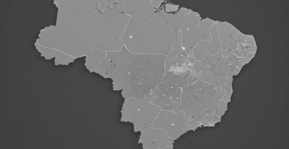

Atuação Institucional
Panorama quantitativo da produção científica brasileira.
Total de Pesquisadores Mapeados
Total de Pesquisadores Mapeados
245
Instituição Líder
USP
Tipo de Instituição
Pública (82%)
Privada (18%)
Top Instituições
-
1
USP Universidade de São Paulo4.2k pesquisadores
-
2
UNICAMP Univ. Estadual de Campinas3.1k pesquisadores
-
3
UFRJ Univ. Federal do Rio de Janeiro2.8k pesquisadores
-
4
UNESP Univ. Estadual Paulista2.4k pesquisadores
